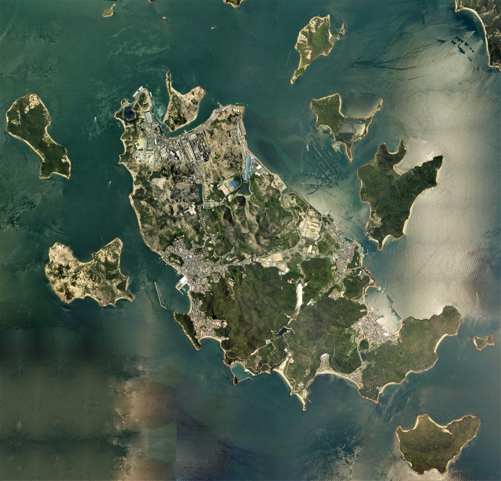

Japan with
Japan withAsk ten travelers for Japan’s five must-see places and the same names begin to appear. That does not make the question easy. Popularity measures recognition, not the quality of a journey. A useful ranking must do more than count famous gates, towers and temples. It must help a first-time visitor understand how radically Japan can change between one train platform and the next.
This list therefore ranks experiences, not municipal boundaries. It favors cultural depth, contrast with the previous stop, access for a first journey, and the strength of the place after the photograph has been taken. Tokyo and Kyoto remain—but not for the standard reasons. Hiroshima is paired with Miyajima because reflection and beauty sharpen one another. Fuji is best approached through its lakes, not reduced to a summit. Naoshima earns a place because it shows that “essential Japan” is still being made.
Tokyo: the city you should stop trying to finish

Tokyo’s first surprise is not its size. It is how quickly the mood changes. Shibuya’s giant screens, Yanaka’s low streets, Asakusa’s temple approach and the forest around Meiji Jingu can feel like different cities linked by an unusually legible railway map. The mistake is treating them as boxes to tick in a single, exhausting circuit.
Tokyo became Japan’s political center as Edo and was reshaped repeatedly by fire, earthquake, war and redevelopment. That history helps explain why the old is often not isolated behind a museum wall. A neighborhood shrine may sit beside a convenience store; a family-run counter may operate under elevated tracks; a garden can preserve the spatial discipline of an earlier era while towers rise beyond its trees.
What to notice: choose two contrasting neighborhoods per day and walk the space between the station and the headline attraction. In Asakusa, move beyond Sensoji’s main axis into the surrounding streets. In Shibuya, look down from above, then leave the crossing and notice how quickly the crowds thin. Tokyo rewards curiosity more than completion.
Photo: David Kernan, CC BY 4.0. License and source.
Kyoto: go early enough to hear it

Kyoto’s fame can work against it. Crowds compress the former capital into a handful of images: a red gate corridor, a bamboo grove, a golden pavilion. Yet Kyoto served as Japan’s capital and cultural center from 794 until the mid-nineteenth century, and its UNESCO property alone joins seventeen temples, shrines and a castle across Kyoto, Uji and Otsu. No single photograph contains the city.
The essential experience is not “seeing temples.” It is learning to read decisions: why a garden leaves empty space, why a gate changes your speed, why a tea room lowers the body, why a borrowed mountain completes a composition outside the garden wall. Craft districts, old merchant houses, Buddhist kitchens and seasonal sweets give the monuments a living context.
What to notice: visit one major site at opening time, then choose a quieter district or garden rather than racing to the next icon. Kyoto’s official tourism guidance now encourages visitors to use congestion forecasts, travel early and explore beyond the concentrated central sites. Courtesy is not an optional travel hack here; residents are part of the city you came to experience.
Photo: Martin Falbisoner, CC BY-SA 4.0. License and source.
Fuji Five Lakes: see the icon as a landscape

Many visitors encounter Mount Fuji as a possible glimpse from a train—or as a climb. The Fuji Five Lakes offer a richer third option. Kawaguchiko, Saiko, Yamanakako, Shojiko and Motosuko arrange water, forests, caves, shrines and settlements around the northern foot of the volcano. The mountain changes with weather and distance, sometimes dominating the horizon and sometimes vanishing completely.
That uncertainty matters. UNESCO inscribed Fujisan not as a natural property but as a cultural one: a sacred place and source of artistic inspiration. Pilgrimage routes, shrines, springs and viewpoints reveal the relationship people built with the volcano. At Motosuko, the north-shore view is familiar from the 1,000-yen banknote. At Kawaguchiko, museums, hot springs and lakeside paths slow the act of looking.
What to notice: stay overnight and look early. Morning often offers clearer views before haze and cloud gather. Do not make visibility the only measure of success; visit a shrine, walk beside the water, and read the mountain through the rituals and images it inspired. If climbing, consult current official trail, reservation and safety information—the season and rules can change.
Photo: Midori, CC BY 3.0. License and source.
Hiroshima and Miyajima: hold two truths in one journey

Hiroshima asks for attention before it asks for admiration. The Peace Memorial Park and Atomic Bomb Dome make the human cost of nuclear war present at city scale. A visit should not be rushed between meals or reduced to a photograph. Give the museum and memorial landscape enough time for silence, and remember that Hiroshima is also a lived-in city defined by reconstruction, rivers, streetcars, food and ordinary routines.
Then cross to Miyajima. The short ferry ride leads toward Itsukushima Shrine, whose great torii appears to float when the tide is high. The island was treated as sacred, and the shrine’s relationship with water and the forested slopes of Mount Misen makes architecture feel inseparable from nature. At low tide, visitors can approach the gate; at high tide, distance restores the illusion.
Pairing the two is not an attempt to make grief picturesque. It reveals a region capable of holding remembrance, faith, beauty and daily life without flattening any of them. That emotional range is why Hiroshima and Miyajima belong together on an essential route.
What to notice: check the tide before Miyajima and consider staying after day-trippers leave. In Hiroshima, approach the memorial sites respectfully and avoid using them as casual photo backdrops.
Photo: JordyMeow, CC BY-SA 3.0. License and source.
Naoshima and Setouchi: where the museum is the island

Naoshima breaks the expected first-trip pattern. There is no castle keep or vast metropolitan crossing to justify the ferry. Instead, contemporary art, architecture, sea, industry and village life have been made to speak to one another across an island of roughly eight square kilometers.
At Chichu Art Museum, much of Tadao Ando’s building sits underground so the landscape remains visually dominant; natural light changes the encounter with works by Claude Monet, James Turrell and Walter De Maria. The Art House Project inserts contemporary work into older homes and neighborhood spaces. Benesse House extends art toward the shoreline. The island does not simply contain museums—the movement between them is part of the composition.
This is the final surprise. “Traditional Japan” is not the only authentic Japan. Naoshima shows cultural value being constructed in the present, with all the productive tensions that implies: tourism and resident life, industrial history and environmental beauty, global art and local scale.
What to notice: reserve timed-entry facilities before traveling, check museum closing days and ferry connections, and stay at least one night if the itinerary allows. Buses are small and bicycles cannot enter every museum zone. Slow logistics are not a flaw; they are what restore human scale after Tokyo.
Aerial photograph: Geospatial Information Authority of Japan / National Land Image Information, attribution license. Source and terms.
How to turn the five into one trip
A practical route begins with three or four nights in Tokyo, adds two nights around the Fuji Five Lakes, then continues west for three or more nights in Kyoto. Hiroshima and Miyajima deserve two nights; Naoshima and the Setouchi islands need another two, with Okayama or Takamatsu as useful gateways. That is already a two-week journey. With fewer days, remove a stop rather than converting every place into a day trip.
Season changes the equation. Spring and autumn bring celebrated scenery and intense demand. Summer adds heat and humidity but also festivals; winter can deliver sharp Fuji views and quieter urban mornings. Reservations, closures, transport and local rules change, so confirm them on the linked official pages before committing money.
The order is not sacred. The contrast is. Finish with the place least like the one before it. Leave blank time. Japan’s unforgettable moments often happen in the space a ranked list cannot name: the first train sound in the morning, a shop curtain lifting, a sentence understood, or a street that becomes interesting only after you have walked past the attraction.
Sources and trip planning
- JNTO: Tokyo destination guide
- JNTO: Historic Monuments of Ancient Kyoto and current responsible-visiting guidance
- JNTO: Fuji Five Lakes
- JNTO: Hiroshima and Miyajima
- JNTO: Naoshima and Benesse Art Site: current reservations and admission
Ranking and itinerary judgments are editorial. Operational details were checked on October 8, 2026; always verify current official guidance before travel.

See the Japan between the five.
Walk through real streets with me on TikTok LIVE, then learn the words around you through play in DraMap for iPhone.
Japan Unfolded is independently edited by Yuji Shimizu, creator of DraMap. The app links above are publisher promotion; destinations were selected editorially and no tourism board paid for inclusion.
First trip? Do these five things before chasing the checklist →
Continue: ten more ways into Japan → · Read why Fuji is a cultural World Heritage site →